本文主要介绍了mybatis以订单商品数据模型为例来分析关系设计。
课程复习：
- mybatis是什么？
- mybatis是一人持久层框架，mybatis是一个不完全的ORM框架。sql语句需要程序员自己去编写，但是mybatis也有映射（输入参数映射、输出结果映射）。
- mybatis入门门槛不高，学习成本低，让程序员把精力放在sql语句上，对sql语句优化非常方便，适用与需求变化较多项目，比如互联网项目。
mybatis框架执行过程：
- 配置mybatis的配置文件，SqlMapConfig.xml（名称不固定）
- 通过配置文件，加载mybatis运行环境，创建SqlSessionFactory会话工厂
SqlSessionFactory在实际使用时按单例方式。 - 通过SqlSessionFactory创建SqlSession
SqlSession是一个面向用户接口（提供操作数据库方法），实现对象是线程不安全的，建议sqlSession应用场合在方法体内。 - 调用sqlSession的方法去操作数据。
如果需要提交事务，需要执行SqlSession的commit()方法。 - 释放资源，关闭SqlSession
mybatis开发dao的方法：
原始dao 的方法
需要程序员编写dao接口和实现类
需要在dao实现类中注入一个SqlSessionFactory工厂。mapper代理开发方法（建议使用）
只需要程序员编写mapper接口（就是dao接口）
程序员在编写mapper.xml(映射文件)和mapper.java需要遵循一个开发规范：
1、mapper.xml中namespace就是mapper.java的类全路径。
2、mapper.xml中statement的id和mapper.java中方法名一致。
3、mapper.xml中statement的parameterType指定输入参数的类型和mapper.java的方法输入 参数类型一致。
4、mapper.xml中statement的resultType指定输出结果的类型和mapper.java的方法返回值类型一致。
SqlMapConfig.xml配置文件：可以配置properties属性、别名、mapper加载。。。
输入映射：
- parameterType：指定输入参数类型可以简单类型、pojo、hashmap。。
- 对于综合查询，建议parameterType使用包装的pojo，有利于系统 扩展。
输出映射：
resultType：
查询到的列名和resultType指定的pojo的属性名一致，才能映射成功。
reusltMap：
可以通过resultMap 完成一些高级映射。
如果查询到的列名和映射的pojo的属性名不一致时，通过resultMap设置列名和属性名之间的对应关系（映射关系）。可以完成映射。
高级映射：
将关联查询的列映射到一个pojo属性中。（一对一）
将关联查询的列映射到一个List
动态sql：（重点）
- if判断（掌握）
- where
- foreach
- sql片段（掌握）
课程安排：
对订单商品数据模型进行分析。
高级映射：（了解）
- 实现一对一查询、一对多、多对多查询。
- 延迟加载
查询缓存
- 一级缓存
- 二级缓存（了解mybatis二级缓存使用场景）
mybatis和spirng整合（掌握）
逆向工程（会用）
1. 订单商品数据模型
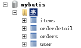
1.1. 数据模型分析思路
- 每张表记录的数据内容
分模块对每张表记录的内容进行熟悉，相当于你学习系统 需求（功能）的过程。 - 每张表重要的字段设置
非空字段、外键字段 - 数据库级别表与表之间的关系
外键关系 - 表与表之间的业务关系
在分析表与表之间的业务关系时一定要建立 在某个业务意义基础上去分析。
1.2 数据模型分析
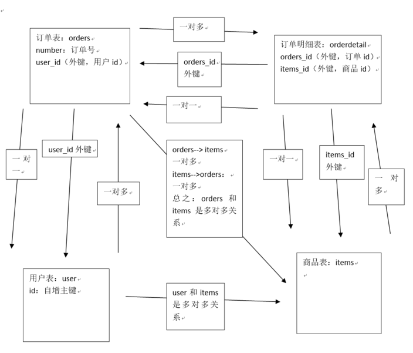
用户表user：
- 记录了购买商品的用户信息
订单表：orders
- 记录了用户所创建的订单（购买商品的订单）
订单明细表：orderdetail：
- 记录了订单的详细信息即购买商品的信息
商品表：items
- 记录了商品信息
表与表之间的业务关系：
在分析表与表之间的业务关系时需要建立在某个业务意义基础上去分析。
先分析数据级别之间有关系的表之间的业务关系：
usre和orders：
user—->orders：一个用户可以创建多个订单，一对多
orders—->user：一个订单只由一个用户创建，一对一
orders和orderdetail：
orders—->orderdetail：一个订单可以包括 多个订单明细，因为一个订单可以购买多个商品，每个商品的购买信息在orderdetail记录，一对多关系
orderdetail—-> orders：一个订单明细只能包括在一个订单中，一对一
orderdetail和items：
orderdetail—->items：一个订单明细只对应一个商品信息，一对一
items—-> orderdetail:一个商品可以包括在多个订单明细 ，一对多
再分析数据库级别没有关系的表之间是否有业务关系：
orders和items：
orders和items之间可以通过orderdetail表建立关系。
2 一对一查询
2.1 需求
查询订单信息，关联查询创建订单的用户信息
2.2 resultType
2.2.1 sql语句
确定查询的主表：订单表
确定查询的关联表：用户表
- 关联查询使用内链接？还是外链接？
- 由于orders表中有一个外键（user_id），通过外键关联查询用户表只能查询出一条记录，可以使用内链接。
|
|
2.2.2 创建pojo
将上边sql查询的结果映射到pojo中，pojo中必须包括所有查询列名。
原始的Orders.java不能映射全部字段，需要新创建的pojo。
创建一个pojo继承包括查询字段较多的po类。
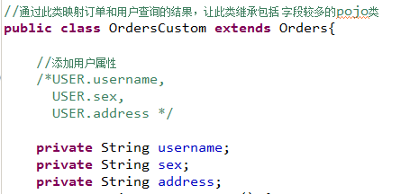
2.2.3 mapper.xml
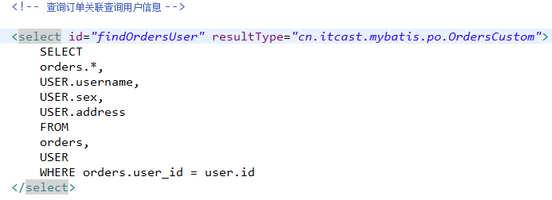
2.2.4 mapper.java
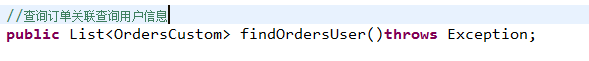
2.3 resultMap
2.3.1 sql语句
同resultType实现的sql
2.3.2 使用resultMap映射的思路
使用resultMap将查询结果中的订单信息映射到Orders对象中，在orders类中添加User属性，将关联查询出来的用户信息映射到orders对象中的user属性中。
2.3.3 需要Orders类中添加user属性
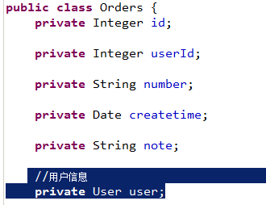
2.3.4 mapper.xml
2.3.4.1 定义resultMap
|
|
2.3.4.2 statement定义
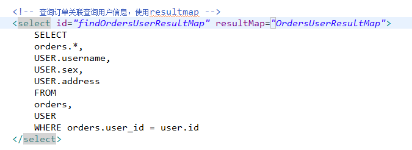
2.3.5 mapper.java
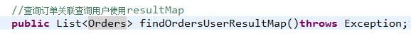
2.4 resultType和resultMap实现一对一查询小结
实现一对一查询：
resultType：使用resultType实现较为简单，如果pojo中没有包括查询出来的列名，需要增加列名对应的属性，即可完成映射。
如果没有查询结果的特殊要求建议使用resultType。
resultMap：需要单独定义resultMap，实现有点麻烦，如果对查询结果有特殊的要求，使用resultMap可以完成将关联查询映射pojo的属性中。
resultMap可以实现延迟加载，resultType无法实现延迟加载。
3. 一对多查询
3.1 需求
查询订单及订单明细的信息。
3.2 sql语句
确定主查询表：订单表
确定关联查询表：订单明细表
在一对一查询基础上添加订单明细表关联即可。
|
|
3.3 分析
使用resultType将上边的 查询结果映射到pojo中，订单信息的就是重复。
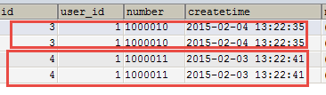
要求：
对orders映射不能出现重复记录。
在orders.java类中添加List
最终会将订单信息映射到orders中，订单所对应的订单明细映射到orders中的orderDetails属性中。
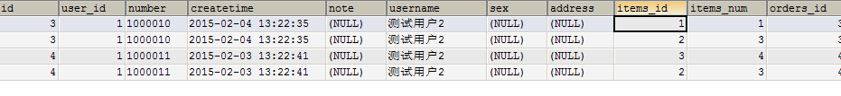
映射成的orders记录数为两条（orders信息不重复）
每个orders中的orderDetails属性存储了该 订单所对应的订单明细。
3.4 在orders中添加list订单明细属性

3.5 mapper.xml
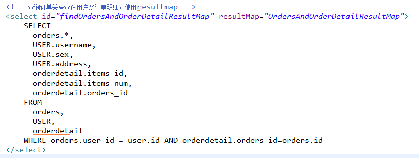
3.6 resultMap定义
|
|
3.7 mapper.java
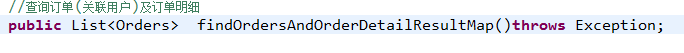
3.8 小结
mybatis使用resultMap的collection对关联查询的多条记录映射到一个list集合属性中。
使用resultType实现：
将订单明细映射到orders中的orderdetails中，需要自己处理，使用双重循环遍历，去掉重复记录，将订单明细放在orderdetails中。
4 多对多查询
4.1 需求
查询用户及用户购买商品信息。
4.2 sql语句
查询主表是：用户表
关联表：由于用户和商品没有直接关联，通过订单和订单明细进行关联，所以关联表：
orders、orderdetail、items
|
|
4.3 映射思路
将用户信息映射到user中。
在user类中添加订单列表属性List
在Orders中添加订单明细列表属性List
在OrderDetail中添加Items属性，将订单明细所对应的商品映射到Items
4.4 mapper.xml
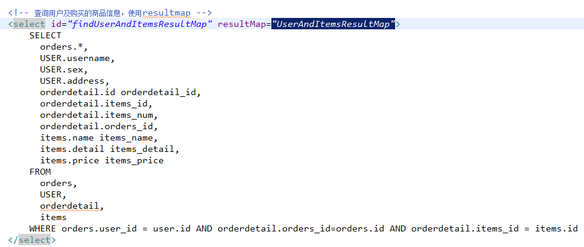
4.5 resultMap定义
|
|
4.6 mapper.java
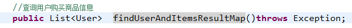
4.7 多对多查询总结
将查询用户购买的商品信息明细清单，（用户名、用户地址、购买商品名称、购买商品时间、购买商品数量）
针对上边的需求就使用resultType将查询到的记录映射到一个扩展的pojo中，很简单实现明细清单的功能。
一对多是多对多的特例，如下需求：
查询用户购买的商品信息，用户和商品的关系是多对多关系。
需求1：
查询字段：用户账号、用户名称、用户性别、商品名称、商品价格(最常见)
企业开发中常见明细列表，用户购买商品明细列表，
使用resultType将上边查询列映射到pojo输出。
需求2：
查询字段：用户账号、用户名称、购买商品数量、商品明细（鼠标移上显示明细）
使用resultMap将用户购买的商品明细列表映射到user对象中。
总结：
使用resultMap是针对那些对查询结果映射有特殊要求的功能，，比如特殊要求映射成list中包括 多个list。
5 resultMap总结
resultType：
作用：
将查询结果按照sql列名pojo属性名一致性映射到pojo中。
场合：
常见一些明细记录的展示，比如用户购买商品明细，将关联查询信息全部展示在页面时，此时可直接使用resultType将每一条记录映射到pojo中，在前端页面遍历list（list中是pojo）即可。
resultMap：
使用association和collection完成一对一和一对多高级映射（对结果有特殊的映射要求）。
association：
作用：
将关联查询信息映射到一个pojo对象中。
场合：
为了方便查询关联信息可以使用association将关联订单信息映射为用户对象的pojo属性中，比如：查询订单及关联用户信息。
使用resultType无法将查询结果映射到pojo对象的pojo属性中，根据对结果集查询遍历的需要选择使用resultType还是resultMap。
collection：
作用：
将关联查询信息映射到一个list集合中。
场合：
为了方便查询遍历关联信息可以使用collection将关联信息映射到list集合中，比如：查询用户权限范围模块及模块下的菜单，可使用collection将模块映射到模块list中，将菜单列表映射到模块对象的菜单list属性中，这样的作的目的也是方便对查询结果集进行遍历查询。
如果使用resultType无法将查询结果映射到list集合中。
6 延迟加载
6.1 什么是延迟加载
resultMap可以实现高级映射（使用association、collection实现一对一及一对多映射），association、collection具备延迟加载功能。
需求：
如果查询订单并且关联查询用户信息。如果先查询订单信息即可满足要求，当我们需要查询用户信息时再查询用户信息。把对用户信息的按需去查询就是延迟加载。
延迟加载：先从单表查询、需要时再从关联表去关联查询，大大提高 数据库性能，因为查询单表要比关联查询多张表速度要快。
6.2 使用association实现延迟加载
6.2.1 需求
查询订单并且关联查询用户信息
6.2.2 mapper.xml
需要定义两个mapper的方法对应的statement。
1、只查询订单信息SELECT * FROM orders
在查询订单的statement中使用association去延迟加载（执行）下边的satatement(关联查询用户信息)
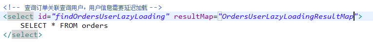
2、关联查询用户信息
- 通过上边查询到的订单信息中user_id去关联查询用户信息
- 使用UserMapper.xml中的findUserById
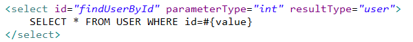
上边先去执行findOrdersUserLazyLoading，当需要去查询用户的时候再去执行findUserById，通过resultMap的定义将延迟加载执行配置起来。
6.2.3 延迟加载resultMap
使用association中的select指定延迟加载去执行的statement的id。
|
|
6.2.4 mapper.java
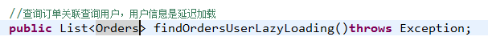
6.2.5 测试
6.2.5.1 测试思路：
1、执行上边mapper方法（findOrdersUserLazyLoading），内部去调用cn.itcast.mybatis.mapper.OrdersMapperCustom中的findOrdersUserLazyLoading只查询orders信息（单表）。
2、在程序中去遍历上一步骤查询出的List
3、延迟加载，去调用UserMapper.xml中findUserbyId这个方法获取用户信息。
6.2.5.2 延迟加载配置
mybatis默认没有开启延迟加载，需要在SqlMapConfig.xml中setting配置。
在mybatis核心配置文件中配置：
lazyLoadingEnabled、aggressiveLazyLoading
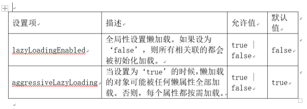
在SqlMapConfig.xml中配置：
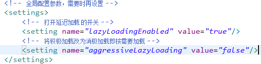
6.2.5.3 测试代码
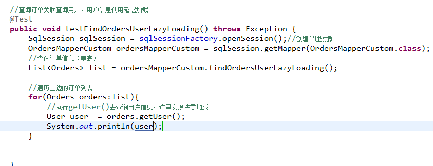
6.2.6 延迟加载思考
不使用mybatis提供的association及collection中的延迟加载功能，如何实现延迟加载？？
实现方法如下：
定义两个mapper方法：
- 查询订单列表
- 根据用户id查询用户信息
实现思路：
先去查询第一个mapper方法，获取订单信息列表
在程序中（service），按需去调用第二个mapper方法去查询用户信息。
总之：
使用延迟加载方法，先去查询简单的sql（最好单表，也可以关联查询），再去按需要加载关联查询的其它信息。